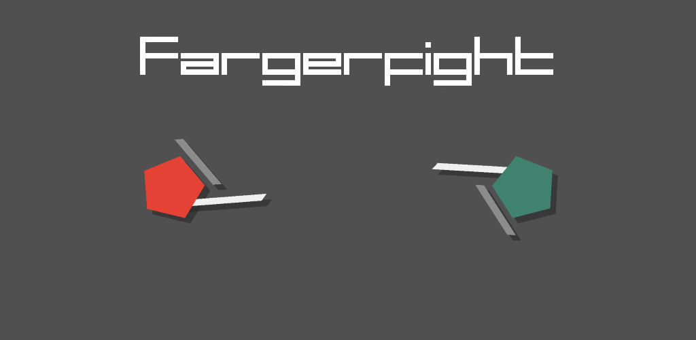
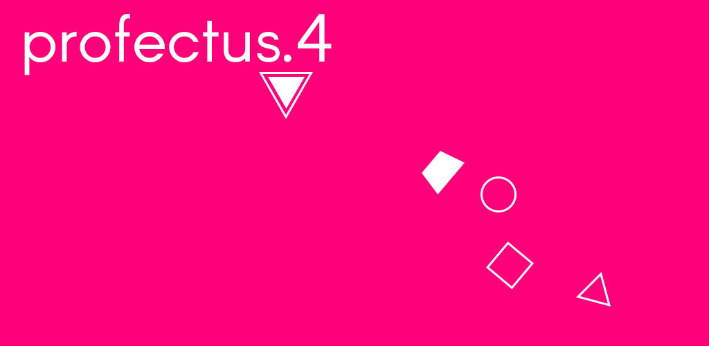

Hi, I'm Juno.
who I am
Just a random dude bouncing away from home in Singapore, for the most part. I have a passion for videogames, something intense enough to drive me to make them myself.
what I do
In my final teenage years, I went to Singapore to study Nursing, which is now providing me with a stable employment and income. While I'm not serving medications and writing medical documentations, you'll find me engulfed in more hobbies than I'll ever have enough time for in this mortal lifespan.
In 2019, I made a bold and somewhat rash of a decision to have a career switch to become a professional software developer. Life and time are finite; and what must be done, must be done now. I delved deeper into the trade by learning web developement, and you are looking at the outcome. Is there a better way to learn something than to actually build it for yourself?
Welcome to my website and my new path. The future is terrifying, but is no less exciting, either.

(2013 - 2016)
From 2013 to 2016, I made several videogames under the moniker Aureoline Tetrahedron as an initiative to explore the social and artistic facets of videogames. Here are some of them, in chronological order (a more comprehensive list can be found on my itch.io page).

Classic Pong with a combat twist. A local multiplayer smartphone game. Made with
HaxeFlixel and
Haxe.

Another local multipayer smartphone game with strong minimalist aesthetic. Made with
love2d and Lua.

An experimental narrative-driven shoot 'em up utilising smartphone accelerometer. Made with
Luxe and
Haxe.
Some projects were never completed. You can find some of my released sources on my Github.